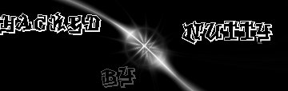

Hacked by nUtTy

sorry admin but umm weak security made me do it
old.htm is the backup crap
could someone email me at humnuts@hotmail.com and tell me other ways of defacing webpages on a windoze system... Dont get mad at me now i jsut want to know :-)
Sh0uts to: BOB, Steve, 5up3rM0us3, and drwOt (Andy), Cheech, NiNi, Thia, and too everyone else i forgot